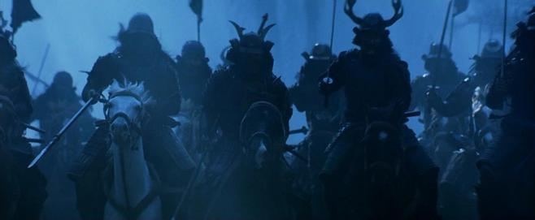

RŌNIN
浪人
Ronin („lutalica“) bio je samuraj bez gospodara tokom feudalnog perioda Japana (1185–1868). Samuraj je ostajao bez gospodara nakon njegove smrti ili nakon gubitka njegovih naklonosti ili privilegija.
ČAST BEZ GOSPODARA
Oni samuraji bez gospodara koji su odlučili da se odreknu tradicije i nastave da žive pali su na loš glas. I dalje su nosili dva mača samuraja, osim ako nisu morali da ih prodaju kada su zapali u teška vremena. Kao pripadnici klase samuraja, u strogoj feudalnoj hijerarhiji, nisu mogli legalno da započnu novu karijeru kao poljoprivrednik, zanatlija ili trgovac — i većina bi prezirala takav posao. Časniji ronin mogao bi da služi kao telohranitelj ili plaćenik za bogate trgovce. Mnogi drugi su se okrenuli kriminalnom životu, radeći za ili čak upravljajući bandama koje su vodile javne kuće i ilegalne kockarnice. Neki su čak uzdrmali lokalne vlasnike preduzeća klasičnim zaštitnim reketima. Ovakvo ponašanje pomoglo je da se učvrsti imidž Ronina kao opasnih kriminalaca bez korena.
Reč ronin bukvalno znači „čovek talasa“. To je idiomatski izraz za "skitnicu" ili "lutajućeg čoveka", nekoga ko pronađe put a da ne pripada nijednom mestu. Termin je nastao u periodima Nara i Heian, kada se odnosio na kmeta koji je pobegao ili napustio zemlju svog gospodara. U srednjem veku, Ronini su prikazivani kao senke samuraja, bez gospodara i manje časni. Zatim je počeo da se koristi za samuraja koji nije imao gospodara (otuda i termin „čovek talasa“ koji ilustruje onog ko je društveno zabačen).
SEPPUKU 切腹
Prema Bušido Šošinšu („Kodeks ratnika“), samuraj je trebalo da počini sepuku (harakiri, „sečenje stomaka“, oblik ritualnog samoubistva) nakon gubitka svog gospodara. Onaj ko je odlučio da ne poštuje kodeks bio je „prepušten sam sebi“ i trebalo je da pretrpi veliku sramotu. Nepoželjnost statusa ronina je uglavnom bila diskriminacija koju su nametnuli drugi samuraji i daimyō (feudalci). Sepuku bi takođe bio izvršavan kada bi samuraji hteli da umru časno, a ne da padnu u ruke svojih neprijatelja (i verovatno budu mučeni), kao oblik smrtne kazne za samuraje koji su počinili ozbiljne prestupe, ili su ih izvršavali zato što su sami sebi naneli sramotu.
OSVETA 47 RONINA 四十七士
Osveta četrdeset sedam ronina (Shijushichishi), takođe poznata kao Ako jiken (Ako incident) ili Ako vendetta (Ako osveta), istorijski je događaj iz 18. veka u Japanu u kojem je grupa ronina osvetila smrt svog gospodara. Incident je od tada postao legendaran.
Priča govori o grupi samuraja koji su ostali bez vođe nakon što je njihov daimyō (feudalac) Asano Naganori bio primoran da izvrši sepuku (ritualno samoubistvo) zbog napada na moćnog sudskog zvaničnika po imenu Kira Jošinaka. Nakon što su čekali i planirali godinu dana, ronini su osvetili čast svog gospodara ubivši Kiru. Tada su bili obavezni da počine sepuku za krivično delo ubistva. Ova istinita priča je popularizovana u japanskoj kulturi kao simbol lojalnosti, požrtvovanja, upornosti i časti koje ljudi treba da ispoljavaju u svom svakodnevnom životu. Popularnost priče je rasla tokom Meiđi ere, tokom koje je Japan doživeo brzu modernizaciju, a legenda je postala ukorenjena u diskursima nacionalnog nasleđa i identiteta.
Kao pokazatelj sramote koju su osećali samuraji koji su postali ronini, lord Redzdejl je zabeležio da se ronin ubio na grobovima četrdeset sedam ronina. Ostavio je poruku u kojoj je pisalo da je pokušao da stupi u službu feudalca iz Čošu domena (長州藩, Chōshū-han), ali je odbijen. Ubio se, ne želeći da služi nijednom drugom gospodaru i mrzeći što je ronin. S druge strane, čuveni pisac iz 18. veka Kjokutej Bakin odrekao se vernosti Macudairi Nobunariju, u čijoj je službi život proveo Bakinov otac samuraj. Bakin je dobrovoljno postao ronin i na kraju je svoje vreme proveo pišući knjige (mnoge od njih o samurajima) i učestvujući u proslavama. U 19. veku, car Meiji je ukinuo klasu samuraja i ronini su umrli sa njima.